<meta charset="utf-8"><title>ラスベガスGPのコラム note貼り付け</title>
<style>
/* one column of numbered paste steps; text steps vs image steps differ by marker */
:root{--bg:#F5F4F0;--card:#FFFFFF;--ink:#1D2321;--mute:#5F665F;--line:#DCDAD2;--btn:#1F5FBF;--btnok:#2E8B4F;--img:#E9F3EC;--imgink:#22663B;--sans:'IBM Plex Sans JP','Hiragino Sans','Noto Sans JP',sans-serif}
@media (prefers-color-scheme:dark){:root:not([data-theme="light"]){--bg:#171A19;--card:#202423;--ink:#ECEDE8;--mute:#A3AAA2;--line:#343937;--btn:#4D8BE6;--btnok:#3FA866;--img:#1E2C23;--imgink:#8FD3A6;color-scheme:dark}}
:root[data-theme="dark"]{--bg:#171A19;--card:#202423;--ink:#ECEDE8;--mute:#A3AAA2;--line:#343937;--btn:#4D8BE6;--btnok:#3FA866;--img:#1E2C23;--imgink:#8FD3A6;color-scheme:dark}
body{background:var(--bg);color:var(--ink);font-family:var(--sans);font-size:15px;line-height:1.75;padding:20px 16px 60px}
main{max-width:680px;margin:0 auto;display:grid;gap:28px}
header h1{font-size:22px;margin:0 0 6px;text-wrap:balance}
header p{margin:0;color:var(--mute);font-size:14px}
nav{display:flex;gap:8px;flex-wrap:wrap;margin-top:12px}
nav a{border:1px solid var(--line);border-radius:999px;padding:4px 14px;color:var(--ink);text-decoration:none;font-size:14px;background:var(--card)}
.part h2{font-size:18px;line-height:1.5;margin:0 0 12px;text-wrap:balance;display:flex;gap:10px;align-items:baseline;flex-wrap:wrap}
.tag{font-size:13px;background:var(--ink);color:var(--bg);border-radius:6px;padding:1px 9px}
.steps{list-style:none;margin:0;padding:0;display:grid;gap:12px}
.st{background:var(--card);border:1px solid var(--line);border-radius:12px;padding:12px;min-width:0}
.hd{display:flex;align-items:center;gap:8px;margin-bottom:8px}
.no{width:26px;height:26px;border-radius:50%;background:var(--btn);color:#fff;display:inline-flex;align-items:center;justify-content:center;font-size:13px;font-weight:700;flex:0 0 26px}
.im .no{background:var(--btnok)}
.hd em{font-style:normal;font-size:12px;background:var(--img);color:var(--imgink);border-radius:6px;padding:0 8px}
.bx{font-size:13.5px;line-height:1.7;border:1px solid var(--line);border-radius:8px;padding:8px 10px;max-height:110px;overflow:auto;overflow-wrap:anywhere}
.bx.tall{max-height:150px}.bx p{margin:0 0 6px}.bx h2{font-size:14px;margin:8px 0 4px}.bx a{color:var(--btn)}
.st img{display:block;width:100%;max-width:100%;border:1px solid var(--line);border-radius:8px}
.sub{font-size:12.5px;color:var(--mute);margin:6px 0 0}
.cp{width:100%;margin-top:8px;padding:12px;border:0;border-radius:10px;background:var(--btn);color:#fff;font:600 15px var(--sans);cursor:pointer}
.cp.ok{background:var(--btnok)}.cp.dl{background:var(--btnok)}.cp:focus-visible{outline:3px solid var(--ink);outline-offset:2px}
.xh{font-size:15px;margin:20px 0 10px}
.fb{font-size:13px;line-height:1.7;margin:8px 0 0;padding:8px 10px;border-radius:8px;background:var(--img);color:var(--imgink)}
.opts{display:grid;grid-template-columns:repeat(auto-fill,minmax(240px,1fr));gap:10px}
.opt{min-width:0}.opt img{display:block;width:100%;border:1px solid var(--line);border-radius:8px}
.ol{display:flex;align-items:center;gap:8px;margin-top:6px}.ol b{font-size:13px;flex:0 0 auto}.ol .on{font-size:12.5px;color:var(--mute);flex:1;min-width:0}.ol .cp{width:auto;flex:0 0 auto;padding:9px 14px}.ol .cp{margin:0;padding:9px}
.toast{font-size:13px;color:var(--mute);margin-top:6px}
</style>
<main><header><h1>ラスベガスGPのコラム note貼り付け</h1><p>いま公開済みは8本です。青い番号は文章、緑は画像です。</p><nav><a href="#p1">1</a><a href="#p2">2</a><a href="#p3">3</a><a href="#p4">4</a><a href="#p5">5</a><a href="#p6">6</a><a href="#p7">7</a><a href="#p8">8</a></nav></header><section class="part" id="p1"><h2><span class="tag">OFF GRID</span>雨のラスベガス、FP1は全車タイムなし　ペレスが名目上の1番手</h2><p class="sub">サイトに公開：20:26</p><ol class="steps">
<li class="st im"><div class="hd"><span class="no">1</span><b>見出し画像</b><em>画像</em></div>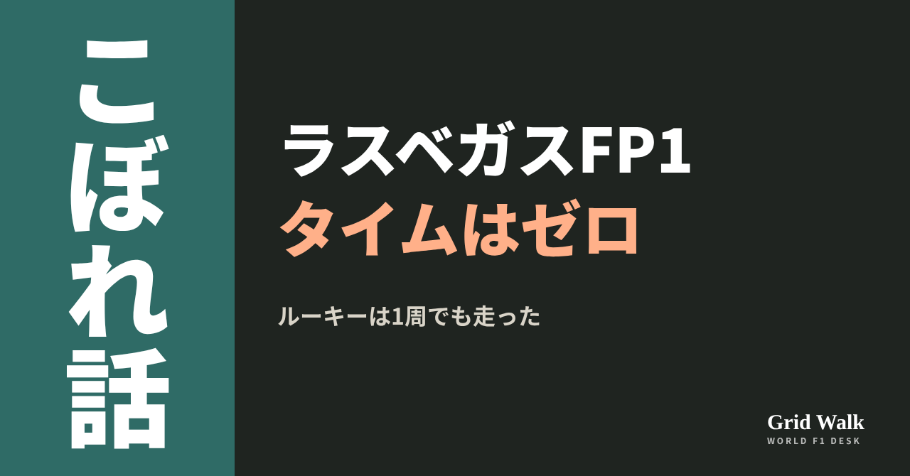<button class="cp dl" data-img="img/vegas-fp1-rain-no-times-20261121.png" data-name="vegas-fp1-rain-no-times-20261121_見出し画像.png">ダウンロード</button></li>
<li class="st"><div class="hd"><span class="no">2</span><b>タイトル</b></div><div class="bx" id="p1t">雨のラスベガス、FP1は全車タイムなし　ペレスが名目上の1番手</div><button class="cp" data-plain="p1t">タイトルをコピー</button></li>
<li class="st"><div class="hd"><span class="no">3</span><b>本文</b></div><div class="bx tall" id="p1r"><p>第21戦ラスベガスGPの1回目のフリー走行（FP1）は、タイム表が空のまま終わりました。F1公式によると、現地11月19日（木）の午後4時30分からの1時間、タイムを測る周回を走りきった人は一人もいませんでした。</p><p>元の記事へのリンクと、ルーキーのFP1走行の決まりの解説はサイトで → <a href="https://f1gridwalk.github.io/lens/vegas-fp1-rain-no-times-20261121/?utm_source=note&amp;utm_campaign=vegas-fp1-rain-no-times-20261121">https://f1gridwalk.github.io/lens/vegas-fp1-rain-no-times-20261121/?utm_source=note&amp;utm_campaign=vegas-fp1-rain-no-times-20261121</a></p><p>ドイツのMotorsport.comによると、22人のうちタイムを出した人はゼロ。F1公式は、木曜は一日じゅう小雨だったと伝えています。要約は https://f1gridwalk.github.io/news/de-motorsporttotal-vegas-fp1-wasser/ にあります。</p><h2>1番手はペレス、でも中身はゼロ</h2><p>オランダのRacingNews365によると、雨はセッションの15分ほど前に強まりました。始まって25分たっても、走ったのは確認のための3周だけ。ハースの2台とキャデラックの1台です。最初に出たのはキャデラックのセルジオ・ペレスで、F1公式によると、雨用のフルウェットタイヤでした。</p><p>同じ記事によると、結果の表には少なくとも1周走った17人が並び、いちばん先にコースに出たペレスが1番手として載りました。RacingNews365は、この順位には何の意味もないと書いています。要約は https://f1gridwalk.github.io/news/nl-racingnews365-vegas-fp1-perez-p1/ にあります。</p><p>Motorsport.comによると、いちばん多く走ったのは、ハースのラファエル・カマラとアルピーヌの2人で、それぞれ2周。5人は1時間ずっとガレージから出ませんでした。メルセデスのアンドレア・キミ・アントネッリは、こう言いました。</p><blockquote><p>「どこもかしこもアクアプレーニングだ」（アントネッリ、F1公式／イギリス）</p></blockquote><p>確認の周回だけで戻ったレッドブルのマックス・フェルスタッペンの言葉を、Motorsport.comはこう伝えています。</p><blockquote><p>「ほとんどスケートリンクの上みたいだ」（フェルスタッペン、Motorsport.com／ドイツ）</p></blockquote><h2>ルーキーには、1周でも意味がある</h2><p>Motorsport.comによると、チームに4回決められているルーキーの走行をFP1で数えてもらうには、そのドライバーが少なくとも一度はガレージを出なければなりません。この日の新人3人、ハースの平川亮、フェラーリのディーノ・ベガノビッチ、アストンマーティンのジャック・クロフォードがそろってコースに出たのは、そのためだと記事は書いています。決まりの中身は、ルールブック https://f1gridwalk.github.io/deep/rules/rookie-fp1/ にあります。</p><p>オリバー・ベアマンの車に乗った平川は、F1公式の動画でこう話しています。</p><blockquote><p>「思っていたより悪かった」（平川、F1公式／イギリス）</p></blockquote><p>動画の説明では、学べたことは多くなく、主にクルマの確認だったといいます。Motorsport.comによると、ベガノビッチは走りながら「すばらしい、きれいなストリップだ」と声を上げ、フェラーリは「景色を楽しんで。でも、この周の終わりにピットに入ってくれ」と返しました。</p><h2>夜のFP2は、まだぬれた路面</h2><p>Motorsport.comは、ピレリのタイヤは温まりにくく、遅いコーナーと凍える寒さのコースでは特にそうだと書いています。同じ日の夜のFP2も、F1公式によると、ぬれた路面で始まり、多くの人が途中からインターミディエイトで走りました。最速はメルセデスのジョージ・ラッセルで1分47秒272、2番手はアルピーヌのピエール・ガスリーで0.071秒差です。土曜と日曜は雨にならない見込みだと、Motorsport.comは伝えています。</p><p>編集部としては、タイムのない1時間でも、ルーキーの決まりを満たした1周には意味があったと見ています。ただ、寒いラスベガスでタイヤを温める練習の機会が1回分減ったことは、各チームの準備に響くかもしれません。</p><p><strong>ルーキーは1周だけ走っても、FP1の義務を果たしたことになる。この数え方を、あなたはどう思いますか？</strong></p><p>━━━━━━━━━━</p><p><strong>F1 Grid Walk では、世界のF1ニュースを毎日日本語でまとめています。</strong></p><p>海外の記事の要約を、毎日載せています。</p><p><a href="https://f1gridwalk.github.io/">https://f1gridwalk.github.io/</a></p><p>ほかの海外記事も読みたい方は、F1 Grid Walkへ。</p><p><a href="https://f1gridwalk.github.io/lens/vegas-fp1-rain-no-times-20261121/">https://f1gridwalk.github.io/lens/vegas-fp1-rain-no-times-20261121/</a></p><p>━━━━━━━━━━</p><p><a href="https://de.motorsport.com/f1/news/keine-einzige-rundenzeit-erstes-training-in-las-vegas-faellt-ins-wasser-26112001/3457400/">出典：Motorsport.com（ドイツ語版）（ドイツ）</a></p><p><a href="https://racingnews365.nl/perez-stunt-met-p1-verstappen-en-co-zonder-tijden-in-eerste-training-las-vegas">出典：RacingNews365（オランダ語版）（オランダ）</a></p><p><a href="https://www.formula1.com/en/latest/article/fp1-wet-conditions-limit-running-in-first-practice-at-las-vegas-grand-prix.7H085JgIW1k8jM3ysejVqJ">出典：F1公式サイト（イギリス）</a></p><p><a href="https://www.formula1.com/en/video/ryo-hirakawa-said-las-vegas-was-worse-than-i-thought-in-wet-haas-fp1-outing.1882360072452515413">出典：F1公式サイト（イギリス）</a></p><p><a href="https://www.formula1.com/en/racing/2026/las-vegas">出典：F1公式サイト（イギリス）</a></p><p><a href="https://www.formula1.com/en/racing/2026">出典：F1公式サイト（イギリス）</a></p></div><button class="cp" data-rich="p1r">本文をコピー</button></li>
<li class="st"><div class="hd"><span class="no">4</span><b>ハッシュタグ</b></div><div class="bx" id="p1h">#F1 #F1jp #ラスベガスGP #フリー走行 #ペレス #平川亮 #雨 #F1こぼれ話 #OFFGRID</div><button class="cp" data-plain="p1h">タグをコピー</button></li>
</ol><h3 class="xh">X</h3><ol class="steps">
<li class="st im"><div class="hd"><b>X用の画像</b><em>画像</em></div>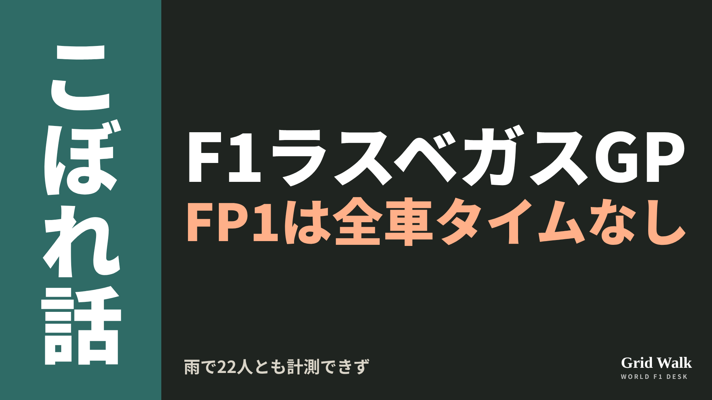<button class="cp dl" data-img="img/x_vegas-fp1-rain-no-times-20261121.png" data-name="x_vegas-fp1-rain-no-times-20261121.png">ダウンロード</button></li>
<li class="st"><div class="hd"><b>① noteをシェアするときの文</b></div><div class="bx" id="p1x0">雨のラスベガスGP、FP1は22人の誰もタイムを出せずに終わりました。結果の表の1番手は、最初にコースに出ただけのペレス。それでもルーキーたちには、1周でも走る理由がありました。noteにまとめました #F1jp #ラスベガスGP</div><button class="cp" data-plain="p1x0">コピー</button></li>
<li class="st"><div class="hd"><b>② ①への返信</b></div><div class="bx" id="p1x1">ほかの海外記事も読みたい方は、F1 Grid Walkへ。
https://f1gridwalk.github.io/lens/vegas-fp1-rain-no-times-20261121/?utm_source=x&amp;utm_campaign=vegas-fp1-rain-no-times-20261121</div><button class="cp" data-plain="p1x1">コピー</button></li>
<li class="st"><div class="hd"><b>③ ②への返信</b></div><div class="bx" id="p1x2">毎日の海外F1ニュースは、日本語でこちらにまとめています。
https://f1gridwalk.github.io/</div><button class="cp" data-plain="p1x2">コピー</button></li>
</ol></section><section class="part" id="p2"><h2><span class="tag">OFF GRID</span>サインツ、ラスベガスで10グリッド降格　5基目のターボで</h2><p class="sub">サイトに公開：20:27</p><ol class="steps">
<li class="st im"><div class="hd"><span class="no">1</span><b>見出し画像</b><em>画像</em></div><button class="cp dl" data-img="img/sainz-vegas-grid-penalty-20261121.png" data-name="sainz-vegas-grid-penalty-20261121_見出し画像.png">ダウンロード</button></li>
<li class="st"><div class="hd"><span class="no">2</span><b>タイトル</b></div><div class="bx" id="p2t">サインツ、ラスベガスで10グリッド降格　5基目のターボで</div><button class="cp" data-plain="p2t">タイトルをコピー</button></li>
<li class="st"><div class="hd"><span class="no">3</span><b>本文</b></div><div class="bx tall" id="p2r"><p>第21戦ラスベガスGPで、ウィリアムズのカルロス・サインツは、予選のあとに10グリッド後ろへ下がることになりました。チームが新しいターボを載せ、今季使える数の上限を超えるためです。F1公式サイトが11月20日、チームの確認として伝えました。</p><p>降格の決まりを解説したルール辞典と、元の記事へのリンクはサイトで → <a href="https://f1gridwalk.github.io/lens/sainz-vegas-grid-penalty-20261121/?utm_source=note&amp;utm_campaign=sainz-vegas-grid-penalty-20261121">https://f1gridwalk.github.io/lens/sainz-vegas-grid-penalty-20261121/?utm_source=note&amp;utm_campaign=sainz-vegas-grid-penalty-20261121</a></p><blockquote><p>「アレックスとカルロスは、今週末、2人ともADUOで可能になった仕様のターボを使う」「カルロスは10グリッド降格を受ける。5基目のターボチャージャーになり、年間に認められた数を超えるからだ」（ウィリアムズの声明、F1公式サイト／イギリス）</p></blockquote><p>サイトの要約は https://f1gridwalk.github.io/news/en-f1com-sainz-piastri-vegas-penalties/ にあります。</p><h2>4基まで、5基目で10グリッド</h2><p>2026年は、1人のドライバーが1シーズンに使えるターボは4基までです。規則の3基に、新しいパワーユニットの年として1基を足した数です。上限を超えると、その部品で初めて超えたときは10グリッド、同じ部品で2回目からは1回ごとに5グリッドの降格になります。サインツはターボで初めて上限を超えるので、10グリッドです。くわしくはルール辞典の https://f1gridwalk.github.io/deep/rules/turbo/ 、https://f1gridwalk.github.io/deep/rules/pu-allocation/ 、https://f1gridwalk.github.io/deep/rules/grid-penalty/ で。</p><p>降格がかかるのは、予選の順位が出たあとです。予選でどこまで上がっても、そこから10グリッド下がります。</p><p>同じ週末には、マクラーレンのオスカー・ピアストリも、エンジン（ICE）の交換で10グリッド降格を受ける見通しです（11月19日のコラム https://f1gridwalk.github.io/lens/piastri-vegas-grid-penalty-20261119/ ）。</p><h2>同じターボでも、判断は分かれた</h2><p>F1公式サイトによると、新しいターボはメルセデスが今週末に入れたもので、ウィリアムズ、マクラーレン、アルピーヌといった、メルセデスのパワーユニットを使うチームのドライバーも使います（カスタマーチームは https://f1gridwalk.github.io/deep/rules/customer-team/ ）。ウィリアムズは、アレクサンダー・アルボンとサインツの2台ともに載せます。</p><p>一方、メルセデスのジョージ・ラッセルは逆を選びました。ラスベガスでの水曜日のメディアデーで、新しいターボは使わないと認めています。F1公式サイトによると、なくても優勝は狙えると考えていて、自分も降格を受けたくないからです。チームメイトのアンドレア・キミ・アントネッリは、新しいターボについてこう話しています。</p><blockquote><p>「大きな性能の向上は見込んでいない」（アントネッリ、F1公式サイト／イギリス）</p></blockquote><p>F1公式サイトは、新しいターボで良くなるのは、むしろ信頼性と扱いやすさだと伝えています。メルセデスのターボの事情は、11月18日のコラム https://f1gridwalk.github.io/lens/mercedes-aduo-turbo-vegas-20261118/ で紹介しました。</p><h2>5点差の9位を守る週末</h2><p>F1公式によると、ウィリアムズはコンストラクターズ9位で12点です。8位のアウディ（28点）とは16点差、10位のアストンマーティン（7点）とは5点差。ドライバーズでは、サインツが18位で7点、アルボンが19位で5点です。今季は残り3戦です。</p><p>11月16日のコラム https://f1gridwalk.github.io/lens/williams-sainz-albon-test-drivers-20261116/ で紹介したように、サインツはイギリスのThe Raceに、終盤のほかのレースは来年のクルマのための試験に近いが、ラスベガスでは入賞を狙って戦うと話していました。その週末を、10グリッド後ろから始めることになります。</p><p>編集部としては、5点差で追われる9位を考えると、今回はアルボンの車の結果がいつも以上に大事になると見ています。2台とも同じ新しいターボを積みながら、声明で降格が示されたのはサインツだけだからです。今季のサインツは、読み解き https://f1gridwalk.github.io/topics/sainz-im-the-same-driver/ で。</p><p><strong>上限を超えると分かっていて、サインツの車にも新しいターボを載せたウィリアムズ。あなたは、この判断に賛成ですか？</strong></p><p>━━━━━━━━━━</p><p><strong>F1 Grid Walk では、世界のF1ニュースを毎日日本語でまとめています。</strong></p><p>海外の記事の要約を、毎日載せています。</p><p><a href="https://f1gridwalk.github.io/">https://f1gridwalk.github.io/</a></p><p>ほかの海外記事も読みたい方は、F1 Grid Walkへ。</p><p><a href="https://f1gridwalk.github.io/lens/sainz-vegas-grid-penalty-20261121/">https://f1gridwalk.github.io/lens/sainz-vegas-grid-penalty-20261121/</a></p><p>━━━━━━━━━━</p><p><a href="https://www.formula1.com/en/latest/article/sainz-handed-grid-penalty-for-las-vegas-grand-prix-after-turbo-change.hKQ2ZkbOHVlu58FKLxMca">出典：F1公式サイト（イギリス）</a></p><p><a href="https://www.formula1.com/en/results/2026/team">出典：F1公式サイト（イギリス）</a></p><p><a href="https://www.formula1.com/en/results/2026/drivers">出典：F1公式サイト（イギリス）</a></p><p><a href="https://www.formula1.com/en/racing/2026">出典：F1公式サイト（イギリス）</a></p></div><button class="cp" data-rich="p2r">本文をコピー</button></li>
<li class="st"><div class="hd"><span class="no">4</span><b>ハッシュタグ</b></div><div class="bx" id="p2h">#F1 #F1jp #ウィリアムズ #サインツ #アルボン #ラスベガスGP #グリッド降格 #パワーユニット #ADUO #F1こぼれ話 #OFFGRID</div><button class="cp" data-plain="p2h">タグをコピー</button></li>
</ol><h3 class="xh">X</h3><ol class="steps">
<li class="st im"><div class="hd"><b>X用の画像</b><em>画像</em></div>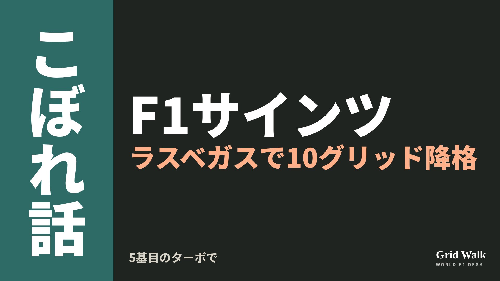<button class="cp dl" data-img="img/x_sainz-vegas-grid-penalty-20261121.png" data-name="x_sainz-vegas-grid-penalty-20261121.png">ダウンロード</button></li>
<li class="st"><div class="hd"><b>① noteをシェアするときの文</b></div><div class="bx" id="p2x0">ウィリアムズのサインツが、ラスベガスGPで10グリッド降格を受けます。メルセデスの新しいターボを載せ、今季4基までの枠を超えるためです。ウィリアムズは9位で、10位とは5点差。noteにまとめました #F1jp #サインツ #ウィリアムズ</div><button class="cp" data-plain="p2x0">コピー</button></li>
<li class="st"><div class="hd"><b>② ①への返信</b></div><div class="bx" id="p2x1">ほかの海外記事も読みたい方は、F1 Grid Walkへ。
https://f1gridwalk.github.io/lens/sainz-vegas-grid-penalty-20261121/?utm_source=x&amp;utm_campaign=sainz-vegas-grid-penalty-20261121</div><button class="cp" data-plain="p2x1">コピー</button></li>
<li class="st"><div class="hd"><b>③ ②への返信</b></div><div class="bx" id="p2x2">毎日の海外F1ニュースは、日本語でこちらにまとめています。
https://f1gridwalk.github.io/</div><button class="cp" data-plain="p2x2">コピー</button></li>
</ol></section><section class="part" id="p3"><h2><span class="tag">OFF GRID</span>ハジャー「レースに勝ちたい」　残り3戦で初優勝を狙う</h2><p class="sub">サイトに公開：20:28</p><ol class="steps">
<li class="st im"><div class="hd"><span class="no">1</span><b>見出し画像</b><em>画像</em></div><button class="cp dl" data-img="img/hadjar-first-win-chance-20261121.png" data-name="hadjar-first-win-chance-20261121_見出し画像.png">ダウンロード</button></li>
<li class="st"><div class="hd"><span class="no">2</span><b>タイトル</b></div><div class="bx" id="p3t">ハジャー「レースに勝ちたい」　残り3戦で初優勝を狙う</div><button class="cp" data-plain="p3t">タイトルをコピー</button></li>
<li class="st"><div class="hd"><span class="no">3</span><b>本文</b></div><div class="bx tall" id="p3r"><p>サンパウロでチームメイトに順位を譲ったレッドブルのアイザック・ハジャーが、今季の残りに大きな目標を掲げました。ドイツのMotorsport-Totalが11月19日に伝えた言葉です（同じ記事はFormel1.deにも掲載）。</p><p>元の記事へのリンクと、サンパウロ直後のハジャーの言葉を紹介したコラムへの案内はサイトで → <a href="https://f1gridwalk.github.io/lens/hadjar-first-win-chance-20261121/?utm_source=note&amp;utm_campaign=hadjar-first-win-chance-20261121">https://f1gridwalk.github.io/lens/hadjar-first-win-chance-20261121/?utm_source=note&amp;utm_campaign=hadjar-first-win-chance-20261121</a></p><blockquote><p>「レースに勝ちたい。まったく違うシーズンに入る前に、あと3回のチャンスがある」「だから全力を出す。僕にとっては、もう懸かっているものは何もないから」（ハジャー、Motorsport-Total／ドイツ）</p></blockquote><p>2026年は全23戦。残るのは、いま行われている第21戦ラスベガスGP（現地11月19〜21日）と、カタール、アブダビの3戦です（F1公式）。</p><h2>3位は3回、あと一段</h2><p>ハジャーは今季、6月のモナコ、9月のアゼルバイジャン、11月のサンパウロで3位に入っています。モナコは、ほかの車への罰をめぐる9月の控訴審の判断で3位になりました（F1公式）。ドライバーズランキングは122点で8位、フェルスタッペンは279点で2位です（F1公式）。勝てる条件については、こう話しています。</p><blockquote><p>「全部を完璧にやって、それはもちろん難しいけど、勝利に値する走りをすれば、勝てると思う」（ハジャー、Motorsport-Total／ドイツ）</p></blockquote><p>ただ、サンパウロは完璧ではなかったと本人も認めています。記事によると、避けられたはずの2つか3つのミスを悔やみ、まっすぐ2位まで上がるべきだった、そうすれば順位の入れ替えの指示も受けずに済んだと話しました。</p><blockquote><p>「でも、そうはならなかった」（ハジャー、Motorsport-Total／ドイツ）</p></blockquote><p>レース直後のハジャーの言葉は、コラム https://f1gridwalk.github.io/lens/hadjar-fewer-mistakes-20261109/ で紹介しています。</p><h2>フェラーリは、もう遠い</h2><p>レッドブルはサンパウロの2位と3位で33点を取り、コンストラクターズでフェラーリとの差を縮めました（Motorsport-Total）。それでもハジャーは、追いつけるとは見ていません。</p><blockquote><p>「僕たち、まだ彼らと戦っているのかな？ もう行ってしまったと思う」（ハジャー、Motorsport-Total／ドイツ）</p></blockquote><p>F1公式のコンストラクターズ順位では、2位フェラーリが510点、3位レッドブルが415点で、差は95点です。後ろの4位マクラーレンは398点で、レッドブルとの差は17点しかありません。</p><p>夏には、トレーニング中に手をけがして、ザントフォールト、モンツァ、マドリードの3つの週末を欠場し、リアム・ローソンが代わりに走りました。その3つのうち2つで、レッドブルはフェラーリより多く点を取ったと記事は書いています。</p><blockquote><p>「けがをしていなければ、もっと貢献できたはずだ」（ハジャー、Motorsport-Total／ドイツ）</p></blockquote><p>今季は自分の速さに驚いた場面がある一方で、その逆もあったといいます。オランダのF1Maximaalも、ハジャーが各国のメディアに話した言葉として同じ内容を伝えています。</p><blockquote><p>「そのときに、マックスがなぜ4回も世界王者になったのか分かった」（ハジャー、Motorsport-Total／ドイツ）</p></blockquote><blockquote><p>「シーズン前なら、こういう1年に間違いなくサインしていた」「でも、来年はもっと良くなる！」（ハジャー、Motorsport-Total／ドイツ）</p></blockquote><p>編集部としては、この言葉は、残り3戦は順位を守るより勝ちを取りにいく、という宣言だと見ています。ただ、チームはマクラーレンに17点差まで迫られていて、2台そろって点を取る仕事も残っています。サンパウロのような順番の判断が、ラスベガスでまた求められるかもしれません。</p><p><strong>ハジャーの初優勝、残り3戦のうちに見られると思いますか？</strong></p><p>━━━━━━━━━━</p><p><strong>F1 Grid Walk では、世界のF1ニュースを毎日日本語でまとめています。</strong></p><p>海外の記事の要約を、毎日載せています。</p><p><a href="https://f1gridwalk.github.io/">https://f1gridwalk.github.io/</a></p><p>ほかの海外記事も読みたい方は、F1 Grid Walkへ。</p><p><a href="https://f1gridwalk.github.io/lens/hadjar-first-win-chance-20261121/">https://f1gridwalk.github.io/lens/hadjar-first-win-chance-20261121/</a></p><p>━━━━━━━━━━</p><p><a href="https://www.formel1.de/news/news/2026-11-19/kampfansage-nach-brasilien-stallorder-in-las-vegas-will-isack-hadjar-gewinnen">出典：Formel1.de（元はMotorsport-Total.com）（ドイツ）</a></p><p><a href="https://www.f1maximaal.nl/formule-1/hadjar-spreekt-zich-uit-over-niveau-van-verstappen-ik-begrijp-het-nu">出典：F1Maximaal（オランダ）</a></p><p><a href="https://www.formula1.com/en/results/2026/races/1299/brazil/race-result">出典：F1公式サイト（イギリス）</a></p><p><a href="https://www.formula1.com/en/results/2026/races/1295/azerbaijan/race-result">出典：F1公式サイト（イギリス）</a></p><p><a href="https://formula1.com/en/latest/article/gasly-loses-monaco-podium-as-penalties-reinstated-following-mclaren-and-red-bull-appeal.2DvZIUbpmqhnBSGJuDNjlv">出典：F1公式サイト（イギリス）</a></p><p><a href="https://www.formula1.com/en/results/2026/drivers">出典：F1公式サイト（イギリス）</a></p><p><a href="https://www.formula1.com/en/results/2026/team">出典：F1公式サイト（イギリス）</a></p><p><a href="https://www.formula1.com/en/results/2026/races">出典：F1公式サイト（イギリス）</a></p></div><button class="cp" data-rich="p3r">本文をコピー</button></li>
<li class="st"><div class="hd"><span class="no">4</span><b>ハッシュタグ</b></div><div class="bx" id="p3h">#F1 #F1jp #レッドブル #ハジャー #フェルスタッペン #ラスベガスGP #F1こぼれ話 #OFFGRID</div><button class="cp" data-plain="p3h">タグをコピー</button></li>
</ol><h3 class="xh">X</h3><ol class="steps">
<li class="st im"><div class="hd"><b>X用の画像</b><em>画像</em></div><button class="cp dl" data-img="img/x_hadjar-first-win-chance-20261121.png" data-name="x_hadjar-first-win-chance-20261121.png">ダウンロード</button></li>
<li class="st"><div class="hd"><b>① noteをシェアするときの文</b></div><div class="bx" id="p3x0">今季3位が3回のレッドブルのハジャーが、残り3戦で「レースに勝ちたい」。サンパウロでは自分のミスを認め、フェラーリには「もう行ってしまった」と話しました。noteにまとめました #F1jp #ハジャー #レッドブル</div><button class="cp" data-plain="p3x0">コピー</button></li>
<li class="st"><div class="hd"><b>② ①への返信</b></div><div class="bx" id="p3x1">ほかの海外記事も読みたい方は、F1 Grid Walkへ。
https://f1gridwalk.github.io/lens/hadjar-first-win-chance-20261121/?utm_source=x&amp;utm_campaign=hadjar-first-win-chance-20261121</div><button class="cp" data-plain="p3x1">コピー</button></li>
<li class="st"><div class="hd"><b>③ ②への返信</b></div><div class="bx" id="p3x2">毎日の海外F1ニュースは、日本語でこちらにまとめています。
https://f1gridwalk.github.io/</div><button class="cp" data-plain="p3x2">コピー</button></li>
</ol></section><section class="part" id="p4"><h2><span class="tag">OFF GRID</span>マクラーレン、2台失格のベガスへ　ステラ「この場所とようやく折り合いを」</h2><p class="sub">サイトに公開：20:29</p><ol class="steps">
<li class="st im"><div class="hd"><span class="no">1</span><b>見出し画像</b><em>画像</em></div><button class="cp dl" data-img="img/mclaren-vegas-redemption-20261121.png" data-name="mclaren-vegas-redemption-20261121_見出し画像.png">ダウンロード</button></li>
<li class="st"><div class="hd"><span class="no">2</span><b>タイトル</b></div><div class="bx" id="p4t">マクラーレン、2台失格のベガスへ　ステラ「この場所とようやく折り合いを」</div><button class="cp" data-plain="p4t">タイトルをコピー</button></li>
<li class="st"><div class="hd"><span class="no">3</span><b>本文</b></div><div class="bx tall" id="p4r"><p>去年は2位と4位でゴールしたのに、2台とも失格。そのラスベガスに、マクラーレンが戻ってきました。アンドレア・ステラ代表は、車は速くなったと前を向く一方で、長い直線には心配が残ると話しています。イギリスのRacingNews365が11月17日に伝えました。</p><p>去年の失格の測った値と、スキッドの決まりの解説はサイトで → <a href="https://f1gridwalk.github.io/lens/mclaren-vegas-redemption-20261121/?utm_source=note&amp;utm_campaign=mclaren-vegas-redemption-20261121">https://f1gridwalk.github.io/lens/mclaren-vegas-redemption-20261121/?utm_source=note&amp;utm_campaign=mclaren-vegas-redemption-20261121</a></p><p>オーストリアのSpeedweek（英語版）によると、話したのは、インテルラゴスでの第20戦サンパウロGPのあとです。そのレースは、F1公式の結果でランド・ノリスが勝っています。</p><h2>9mmに届かなかった床下</h2><p>F1公式サイトによると、2025年のラスベガスGPで、ノリスは2位、オスカー・ピアストリは4位でゴールしました。ところがレース後の検査で、2台とも床下のスキッドが、技術規則で決まった最低9mmの厚さを下回っていました。測った値は、ノリスが8.88mmと8.93mm、ピアストリが8.96mm、8.74mm、8.90mmです。</p><p>マクラーレンは、練習では出なかった強いポーポイジング（車体が上下に跳ねる動き）で、床が路面に当たりすぎたと説明しました。スチュワードはわざとではないと認めながらも、決まりと前例では失格しかないと判断し、2台は点を失っています（F1公式サイト）。スキッドとポーポイジングは、ルール辞典の https://f1gridwalk.github.io/deep/rules/skid-blocks/ と https://f1gridwalk.github.io/deep/rules/porpoising/ で。</p><p>ステラ代表も、このことに触れています。</p><blockquote><p>「去年だって、いいレースをしたのに、スキッドの問題で自分たちの首をしめてしまった」（ステラ、RacingNews365／イギリス）</p></blockquote><h2>いちばん苦しんできたコース</h2><p>RacingNews365によると、初開催の2023年は2台ともQ1で敗退し、ピアストリが10位。2024年は、F1公式サイトによるとノリス6位、ピアストリ7位でした。そして2025年の失格です。</p><blockquote><p>「ベガスに行って、いい結果を出したい」「カレンダーのすべてのレースの中で、たぶんいちばん苦しんできたところだから」（ステラ、RacingNews365／イギリス）</p></blockquote><blockquote><p>「だからベガスを楽しみにしている。いい結果を出して、この場所とようやく折り合いをつけたい」（ステラ、RacingNews365／イギリス）</p></blockquote><h2>心配は長い直線</h2><blockquote><p>「ベガスはまったく違うレイアウトのコースだ。長い直線がある」（ステラ、RacingNews365／イギリス）</p></blockquote><p>弱点も挙げています。最高速が求められるモンツァやバクーでは、マクラーレンはいちばん速い車とは限らなかった、とステラ代表は振り返ります。理由の一つとして挙げたのがギア比です。</p><blockquote><p>「これには、うちのギア比もどこかで関係しているとわかっている。ある程度の最高速を超えなければならないときには、理想的ではないギア比だ」（ステラ、RacingNews365／イギリス）</p></blockquote><blockquote><p>「でも、そうは言っても、車は今のほうが速いので、ある程度の楽観をもってベガスに向かう」（ステラ、RacingNews365／イギリス）</p></blockquote><p>Speedweekによると、ラスベガスはレース中10℃前後の見込みで、冷えて滑りやすくなります。ステラ代表は、涼しく雨もあったブラジルの週末が、タイヤの使い方を知る手がかりになると見ているそうです。新しい部品とピアストリのグリッド降格は、コラム https://f1gridwalk.github.io/lens/piastri-vegas-grid-penalty-20261119/ で。</p><p>F1公式の順位では、マクラーレンはコンストラクターズ4位で398点。3位のレッドブルとは17点差で、今季は残り3戦です。</p><p>編集部としては、今回の週末の答えは、チェッカーのあとの検査が終わるまで出ないと見ています。去年はいいレースを自分たちで台無しにしたと、ステラ代表自身が認めているからです。</p><p><strong>マクラーレンは今年こそ、ラスベガスと折り合いをつけられると思いますか？</strong></p><p>━━━━━━━━━━</p><p><strong>F1 Grid Walk では、世界のF1ニュースを毎日日本語でまとめています。</strong></p><p>海外の記事の要約を、毎日載せています。</p><p><a href="https://f1gridwalk.github.io/">https://f1gridwalk.github.io/</a></p><p>ほかの海外記事も読みたい方は、F1 Grid Walkへ。</p><p><a href="https://f1gridwalk.github.io/lens/mclaren-vegas-redemption-20261121/">https://f1gridwalk.github.io/lens/mclaren-vegas-redemption-20261121/</a></p><p>━━━━━━━━━━</p><p><a href="https://racingnews365.com/mclaren-striving-to-make-peace-with-las-vegas-after-persistent-struggles">出典：RacingNews365（イギリス）</a></p><p><a href="https://www.speedweek.com/en/a/formula-1/mclaren-stella-make-peace-with-las-vegas">出典：Speedweek（英語版）（オーストリア）</a></p><p><a href="https://www.formula1.com/en/latest/article/norris-and-piastri-disqualified-from-las-vegas-gp-as-mclaren-fail-post-race.10uHwsN6mLfCNoZ6nKQvPy">出典：F1公式サイト（イギリス）</a></p><p><a href="https://www.formula1.com/en/latest/article/explained-all-you-need-to-know-about-norris-and-piastris-disqualifications.5zmlQrvlH4x4ZmzQICIDsm">出典：F1公式サイト（イギリス）</a></p><p><a href="https://www.formula1.com/en/latest/article/verstappen-crowned-champion-as-russell-heads-mercedes-1-2-in-las-vegas.3TZdhZEthj8sADUPU8p6Ni">出典：F1公式サイト（イギリス）</a></p><p><a href="https://www.formula1.com/en/results/2026/races">出典：F1公式サイト（イギリス）</a></p><p><a href="https://www.formula1.com/en/results/2026/team">出典：F1公式サイト（イギリス）</a></p><p><a href="https://www.formula1.com/en/racing/2026">出典：F1公式サイト（イギリス）</a></p></div><button class="cp" data-rich="p4r">本文をコピー</button></li>
<li class="st"><div class="hd"><span class="no">4</span><b>ハッシュタグ</b></div><div class="bx" id="p4h">#F1 #F1jp #マクラーレン #ステラ #ノリス #ピアストリ #ラスベガスGP #F1こぼれ話 #OFFGRID</div><button class="cp" data-plain="p4h">タグをコピー</button></li>
</ol><h3 class="xh">X</h3><ol class="steps">
<li class="st im"><div class="hd"><b>X用の画像</b><em>画像</em></div>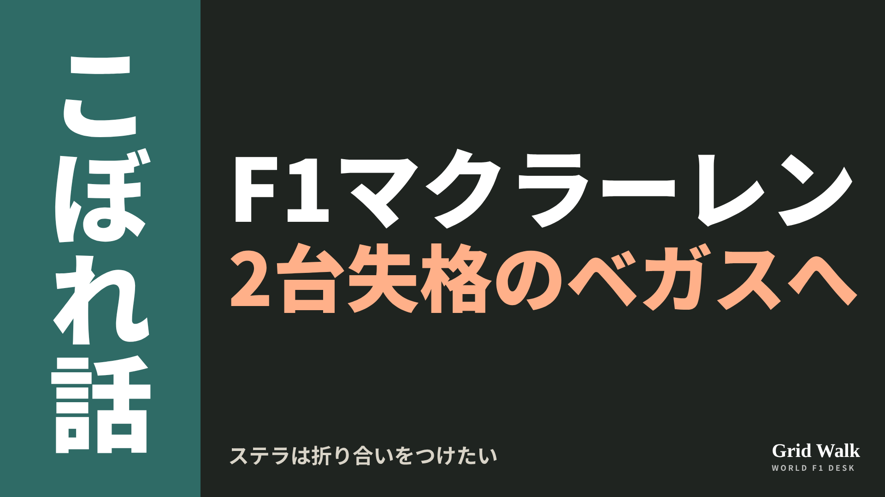<button class="cp dl" data-img="img/x_mclaren-vegas-redemption-20261121.png" data-name="x_mclaren-vegas-redemption-20261121.png">ダウンロード</button></li>
<li class="st"><div class="hd"><b>① noteをシェアするときの文</b></div><div class="bx" id="p4x0">去年のラスベガスで、2位と4位でゴールしたあと2台とも失格になったマクラーレン。ステラ代表は「車は今のほうが速い」と前を向きつつ、長い直線とギア比を心配しています。noteにまとめました #F1jp #マクラーレン #ラスベガスGP</div><button class="cp" data-plain="p4x0">コピー</button></li>
<li class="st"><div class="hd"><b>② ①への返信</b></div><div class="bx" id="p4x1">ほかの海外記事も読みたい方は、F1 Grid Walkへ。
https://f1gridwalk.github.io/lens/mclaren-vegas-redemption-20261121/?utm_source=x&amp;utm_campaign=mclaren-vegas-redemption-20261121</div><button class="cp" data-plain="p4x1">コピー</button></li>
<li class="st"><div class="hd"><b>③ ②への返信</b></div><div class="bx" id="p4x2">毎日の海外F1ニュースは、日本語でこちらにまとめています。
https://f1gridwalk.github.io/</div><button class="cp" data-plain="p4x2">コピー</button></li>
</ol></section><section class="part" id="p5"><h2><span class="tag">OFF GRID</span>ノリス「タイヤが冷えると、かなり厄介」　雨のラスベガスを警戒</h2><p class="sub">サイトに公開：20:30</p><ol class="steps">
<li class="st im"><div class="hd"><span class="no">1</span><b>見出し画像</b><em>画像</em></div>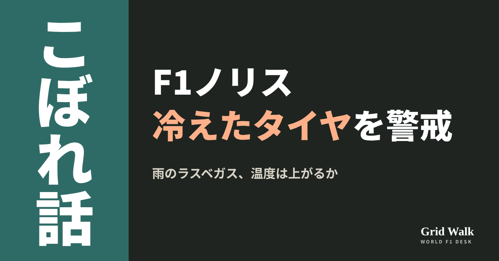<button class="cp dl" data-img="img/norris-vegas-cold-tyres-20261121.png" data-name="norris-vegas-cold-tyres-20261121_見出し画像.png">ダウンロード</button></li>
<li class="st"><div class="hd"><span class="no">2</span><b>タイトル</b></div><div class="bx" id="p5t">ノリス「タイヤが冷えると、かなり厄介」　雨のラスベガスを警戒</div><button class="cp" data-plain="p5t">タイトルをコピー</button></li>
<li class="st"><div class="hd"><span class="no">3</span><b>本文</b></div><div class="bx tall" id="p5r"><p>タイヤが冷えると、どうなるのか。11月8日の雨のサンパウロGPを勝ったマクラーレンのランド・ノリスは、イギリスのAutosportにこう答えました。</p><p>元の記事へのリンクと、雨用タイヤの用語解説はサイトで → <a href="https://f1gridwalk.github.io/lens/norris-vegas-cold-tyres-20261121/?utm_source=note&amp;utm_campaign=norris-vegas-cold-tyres-20261121">https://f1gridwalk.github.io/lens/norris-vegas-cold-tyres-20261121/?utm_source=note&amp;utm_campaign=norris-vegas-cold-tyres-20261121</a></p><blockquote><p>「タイヤが冷えると、かなり厄介だ」「グリッドへ向かう周回で、すごく冷えたときは、ひどい感触だった。いい幅に入れば、いいんだ」（ノリス、Autosport／イギリス）</p></blockquote><p>今の規則になって初めての本格的な雨の週末だったサンパウロGPをどう見たか。Autosportがそう聞いたときの言葉で、11月16日の記事に載っています。イギリスのPlanetF1も11月17日にこの話を取り上げ、ラスベガスGPのフリー走行が雨になるおそれがあると伝えました。サイトの要約は https://f1gridwalk.github.io/news/en-planetf1-norris-vegas-cold-tyres/ にあります。</p><h2>雨のインテルラゴスで見えたこと</h2><p>F1公式の結果によると、サンパウロGPはノリスが優勝し、2位のマックス・フェルスタッペン（レッドブル）に14秒602の差をつけました。3位はアイザック・ハジャー（レッドブル）です。Autosportによると、この週末は予選がコースにたまった水のために1時間以上止まりました。各ドライバーは、タイヤを替えて走り始めたときやグリッドへ向かう周回で、冷えたインターミディエイトのままクルマをコースにとどめるのに苦しんだといいます。その先のラスベガスについて、ノリスはこう話しました。</p><blockquote><p>「だから、ベガスに行って、タイヤの温度がまったく上がらないときが、怖い時間になると思う」（ノリス、Autosport／イギリス）</p></blockquote><p>2位のフェルスタッペンも、雨用タイヤが働く温度の幅が少し狭すぎると話しています。AutosportとPlanetF1によると、熱いときは問題ないものの、冷えると「本当に岩みたい」だといいます。ハジャーも「インターを履くまで、しばらく待たないといけないようにも感じる」と話し、今のタイヤは前より硬いと感じているそうです（PlanetF1）。</p><h2>寒く、速いコーナーの少ないラスベガス</h2><p>PlanetF1が伝えた予報では、現地木曜16時30分からのFP1の降水確率が46%、20時からの2回目が17%、最高気温は12℃でした。Autosportは、週末の気温は10℃を大きく下回る見込みで、タイヤに荷重をかける高速コーナーもないと書いています。</p><p>F1公式によると、ピレリがラスベガスに選んだドライタイヤは、ハードがC3、ミディアムがC4、ソフトがC5です。ピレリは、コースの速度が高いぶん、タイヤの温まりが鍵になるとしています。予選で雨になった場合は、気温の低さとコースの形から、インターミディエイトより溝の深いフルウェットのほうがよく効くかもしれない、とも見ています（用語は https://f1gridwalk.github.io/deep/rules/intermediate/ と https://f1gridwalk.github.io/deep/rules/full-wet/ で）。</p><p>ただ、すぐの改善は望めません。Autosportによると、ピレリは2027年のタイヤの承認をすでに済ませていて、ブラジルで分かったことを来季に生かすことはできません。ピレリのモータースポーツ責任者ダリオ・マラフスキは、サンパウロの予選のあと、2027年に向けていくらか前進はあったとしつつ、来季に向けた雨用タイヤの開発はもう締め切ったと話したといいます。ノリスは、今あるものよりずっといいタイヤが必要だとも話しています（Autosport）。</p><p>編集部としては、ラスベガスで雨が降れば、クルマの速さそのものよりも、冷えたタイヤをどれだけ早く温度の幅に入れられるかが、順位を分けると見ています。乾いた路面でのタイヤの温まりの話は、フェルスタッペンを取り上げたコラム https://f1gridwalk.github.io/lens/verstappen-las-vegas-tyres-20261114/ で。木曜のFP1が雨で全車タイムなしに終わった様子は、コラム https://f1gridwalk.github.io/lens/vegas-fp1-rain-no-times-20261121/ で。</p><p><strong>冷えたタイヤで滑りやすい、雨のラスベガス。あなたは雨の週末を見たいですか？ それとも乾いた路面での勝負を見たいですか？</strong></p><p>━━━━━━━━━━</p><p><strong>F1 Grid Walk では、世界のF1ニュースを毎日日本語でまとめています。</strong></p><p>海外の記事の要約を、毎日載せています。</p><p><a href="https://f1gridwalk.github.io/">https://f1gridwalk.github.io/</a></p><p>ほかの海外記事も読みたい方は、F1 Grid Walkへ。</p><p><a href="https://f1gridwalk.github.io/lens/norris-vegas-cold-tyres-20261121/">https://f1gridwalk.github.io/lens/norris-vegas-cold-tyres-20261121/</a></p><p>━━━━━━━━━━</p><p><a href="https://www.autosport.com/f1/news/lando-norris-f1-needs-better-rain-tyres-as-wet-las-vegas-would-be-scary/10874886/">出典：Autosport（イギリス）</a></p><p><a href="https://www.planetf1.com/news/lando-norris-las-vegas-gp-rain-warning-pirelli-tyres">出典：PlanetF1（イギリス）</a></p><p><a href="https://www.formula1.com/en/latest/article/what-tyres-will-the-teams-and-drivers-have-for-the-2026-las-vegas-grand-prix.1HEaoIW48MVZs9cAT7rP2w">出典：F1公式サイト（イギリス）</a></p><p><a href="https://www.formula1.com/en/results/2026/races/1299/brazil/race-result">出典：F1公式サイト（イギリス）</a></p><p><a href="https://www.formula1.com/en/racing/2026">出典：F1公式サイト（イギリス）</a></p></div><button class="cp" data-rich="p5r">本文をコピー</button></li>
<li class="st"><div class="hd"><span class="no">4</span><b>ハッシュタグ</b></div><div class="bx" id="p5h">#F1 #F1jp #ノリス #マクラーレン #ピレリ #ラスベガスGP #タイヤ #F1こぼれ話 #OFFGRID</div><button class="cp" data-plain="p5h">タグをコピー</button></li>
</ol><h3 class="xh">X</h3><ol class="steps">
<li class="st im"><div class="hd"><b>X用の画像</b><em>画像</em></div>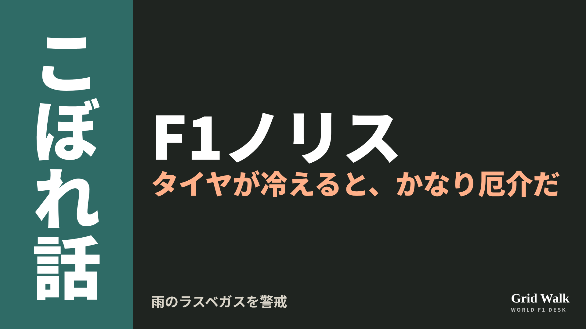<button class="cp dl" data-img="img/x_norris-vegas-cold-tyres-20261121.png" data-name="x_norris-vegas-cold-tyres-20261121.png">ダウンロード</button></li>
<li class="st"><div class="hd"><b>① noteをシェアするときの文</b></div><div class="bx" id="p5x0">雨のサンパウロGPを勝ったノリスが「タイヤが冷えると、かなり厄介だ」。気温の低いラスベガスでは、ピレリのタイヤが温まるかどうかが週末の鍵になりそうです。noteにまとめました #F1jp #ノリス #ラスベガスGP</div><button class="cp" data-plain="p5x0">コピー</button></li>
<li class="st"><div class="hd"><b>② ①への返信</b></div><div class="bx" id="p5x1">ほかの海外記事も読みたい方は、F1 Grid Walkへ。
https://f1gridwalk.github.io/lens/norris-vegas-cold-tyres-20261121/?utm_source=x&amp;utm_campaign=norris-vegas-cold-tyres-20261121</div><button class="cp" data-plain="p5x1">コピー</button></li>
<li class="st"><div class="hd"><b>③ ②への返信</b></div><div class="bx" id="p5x2">毎日の海外F1ニュースは、日本語でこちらにまとめています。
https://f1gridwalk.github.io/</div><button class="cp" data-plain="p5x2">コピー</button></li>
</ol></section><section class="part" id="p6"><h2><span class="tag">OFF GRID</span>フェラーリSF-26、ラスベガスに二重の罠　ルクレールも寒さを心配</h2><p class="sub">サイトに公開：20:31</p><ol class="steps">
<li class="st im"><div class="hd"><span class="no">1</span><b>見出し画像</b><em>画像</em></div>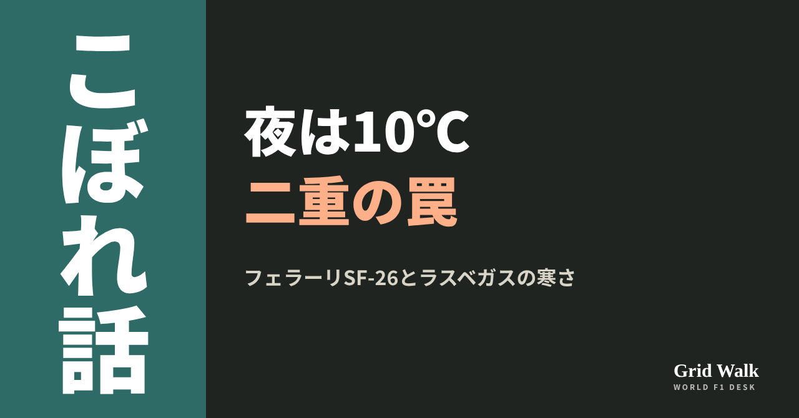<button class="cp dl" data-img="img/ferrari-vegas-double-trap-20261121.png" data-name="ferrari-vegas-double-trap-20261121_見出し画像.png">ダウンロード</button></li>
<li class="st"><div class="hd"><span class="no">2</span><b>タイトル</b></div><div class="bx" id="p6t">フェラーリSF-26、ラスベガスに二重の罠　ルクレールも寒さを心配</div><button class="cp" data-plain="p6t">タイトルをコピー</button></li>
<li class="st"><div class="hd"><span class="no">3</span><b>本文</b></div><div class="bx tall" id="p6r"><p>ラスベガスGPを前に、イタリアのAutomoto.itが、フェラーリSF-26には二重の罠が待っている、と分析しました。11月17日の記事で、長い直線と夜の寒さが、このクルマの二つの弱点を同時に引き出しかねない、という見立てです。シャルル・ルクレール本人も、寒さを気にしています。</p><p>元の記事へのリンクと、タイヤやADUOの用語解説はサイトで → <a href="https://f1gridwalk.github.io/lens/ferrari-vegas-double-trap-20261121/?utm_source=note&amp;utm_campaign=ferrari-vegas-double-trap-20261121">https://f1gridwalk.github.io/lens/ferrari-vegas-double-trap-20261121/?utm_source=note&amp;utm_campaign=ferrari-vegas-double-trap-20261121</a></p><h2>長い直線と、冷えるタイヤ</h2><p>Automotoによると、11月のネバダの砂漠は夜が冷え、気温は10度ほどになります。長い直線と滑らかな路面では、タイヤが冷えて、いちばんよく働く温度の幅から外れやすい、と記事は書きます。用語は https://f1gridwalk.github.io/deep/rules/tyre-warm-up/ と https://f1gridwalk.github.io/deep/rules/operating-window/ で。</p><p>一つ目の弱点として記事が挙げるのは、エンジン（内燃機関）の力です。フェラーリは、出遅れたメーカーに追加の開発を認めるADUO（https://f1gridwalk.github.io/deep/rules/aduo/ ）で改良を進めましたが、Automotoはそれでも馬力が足りないと書いています。加えて、SF-26には設計からくる空気抵抗があり、最高速だけでなく、エネルギーの消費にも響く、というのが記事の見方です。空気抵抗は https://f1gridwalk.github.io/deep/rules/drag/ で。</p><h2>温めるか、電池を残すか</h2><p>二つ目はエネルギーのやりくりです。2026年の規則では、予選の準備の周回でタイヤを温めようと強く走ると、電池の残りが少ないままアタックの周回に入るおそれがある、とAutomotoは説明します。この悩みは、シーズン途中にFIAが手直しを入れる前のほうが大きかったといいます。そのうえで記事は、ラスベガスの予選では、準備に2周かかる可能性がとても高いと見ています。電池のやりくりは https://f1gridwalk.github.io/deep/rules/energy-management/ で。</p><p>二つがつながる理由として、記事は、力のあるエンジンなら電池を充電する余裕も生まれる、と書きます。エンジンの力が足りないと、タイヤを温めることと電池を残すことが、同時に苦しくなるという理屈です。フェラーリはブラジルで、スタートでインターミディエイトタイヤを温度の幅に入れるために空気圧を上げ、その分、タイヤの傷みで代償を払った、とも伝えています。タイヤの内圧は https://f1gridwalk.github.io/deep/rules/tyre-pressure/ で。</p><h2>ルクレールが気にする寒さ</h2><p>イギリスのPlanetF1は11月18日、ルクレールの言葉を伝えました。残り3戦のどこかで勝てるかと聞かれ、そう願っていると答えたうえで、まずブラジルの悪い出来を分析しなければならない、と話しています。そして、ラスベガスは寒さのせいで難しくなるかもしれない、と付け加えました。</p><p>F1公式の結果では、サンパウロGPはルクレールが8位、ルイス・ハミルトンが9位でした。PlanetF1によると、ルクレールはレースのあと、雨のなかでチームがこれほど強かったことはないと話し、雨の予選のセッティングでは分かったことがあるが、決勝ではまだ学ぶことが多い、とも述べています。</p><p>フェラーリは今季、勝っていないわけではありません。F1公式の結果では、6月のバルセロナ・カタルーニャGPでハミルトンが、7月のイギリスGPでルクレールが勝っています。ただ、そのあとの11戦（第10〜20戦）は勝ちがありません。勝利数はメルセデス12、マクラーレン3、レッドブル3、フェラーリ2で、PlanetF1は、上位4チームでいちばん少ないと書いています。コンストラクターズ順位では、フェラーリが510点で2位、3位のレッドブルとは95点差です（F1公式）。</p><p>編集部としては、Automotoの分析の要は、直線の遅さと冷えたタイヤを、電池を通してつながった一つの問題として描いた点にあると見ています。ただ、2周の準備がいるというのは記事の予想で、答えは予選のコースの上で出ます。</p><p><strong>準備に2周かけてタイヤを温めるか、電池を残して早めにアタックに入るか。あなたがフェラーリのエンジニアなら、ラスベガスの予選でどちらを選びますか？</strong></p><p>━━━━━━━━━━</p><p><strong>F1 Grid Walk では、世界のF1ニュースを毎日日本語でまとめています。</strong></p><p>海外の記事の要約を、毎日載せています。</p><p><a href="https://f1gridwalk.github.io/">https://f1gridwalk.github.io/</a></p><p>ほかの海外記事も読みたい方は、F1 Grid Walkへ。</p><p><a href="https://f1gridwalk.github.io/lens/ferrari-vegas-double-trap-20261121/">https://f1gridwalk.github.io/lens/ferrari-vegas-double-trap-20261121/</a></p><p>━━━━━━━━━━</p><p><a href="https://www.automoto.it/formula1/f1-ferrari-la-doppia-trappola-di-las-vegas-i-due-problemi-della-sf-26-che-si-alimentano-a-vicenda.html">出典：Automoto.it（イタリア）</a></p><p><a href="https://www.planetf1.com/news/charles-leclerc-ferrari-las-vegas-prospects-revealed">出典：PlanetF1（イギリス）</a></p><p><a href="https://www.formula1.com/en/results/2026/races">出典：F1公式サイト（イギリス）</a></p><p><a href="https://www.formula1.com/en/results/2026/races/1299/brazil/race-result">出典：F1公式サイト（イギリス）</a></p><p><a href="https://www.formula1.com/en/results/2026/team">出典：F1公式サイト（イギリス）</a></p></div><button class="cp" data-rich="p6r">本文をコピー</button></li>
<li class="st"><div class="hd"><span class="no">4</span><b>ハッシュタグ</b></div><div class="bx" id="p6h">#F1 #F1jp #フェラーリ #ルクレール #ハミルトン #ラスベガスGP #タイヤ #エネルギーマネジメント #F1こぼれ話 #OFFGRID</div><button class="cp" data-plain="p6h">タグをコピー</button></li>
</ol><h3 class="xh">X</h3><ol class="steps">
<li class="st im"><div class="hd"><b>X用の画像</b><em>画像</em></div>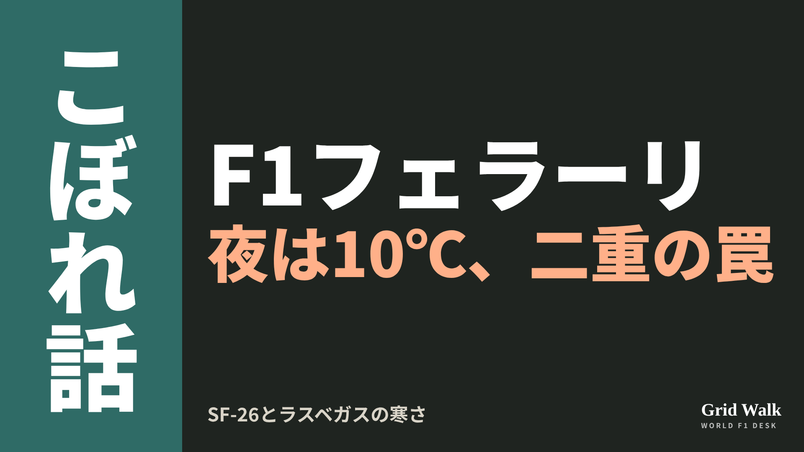<button class="cp dl" data-img="img/x_ferrari-vegas-double-trap-20261121.png" data-name="x_ferrari-vegas-double-trap-20261121.png">ダウンロード</button></li>
<li class="st"><div class="hd"><b>① noteをシェアするときの文</b></div><div class="bx" id="p6x0">伊Automoto.itが、ラスベガスではフェラーリSF-26の二つの弱点が互いを悪くすると分析しました。足りない馬力と、冷えたタイヤを温めるための電池のやりくりです。ルクレールも寒さを心配しています。noteにまとめました #F1jp #フェラーリ #ルクレール</div><button class="cp" data-plain="p6x0">コピー</button></li>
<li class="st"><div class="hd"><b>② ①への返信</b></div><div class="bx" id="p6x1">ほかの海外記事も読みたい方は、F1 Grid Walkへ。
https://f1gridwalk.github.io/lens/ferrari-vegas-double-trap-20261121/?utm_source=x&amp;utm_campaign=ferrari-vegas-double-trap-20261121</div><button class="cp" data-plain="p6x1">コピー</button></li>
<li class="st"><div class="hd"><b>③ ②への返信</b></div><div class="bx" id="p6x2">毎日の海外F1ニュースは、日本語でこちらにまとめています。
https://f1gridwalk.github.io/</div><button class="cp" data-plain="p6x2">コピー</button></li>
</ol></section><section class="part" id="p7"><h2><span class="tag">OFF GRID</span>ヒンチクリフのベガス予想　メルセデスとレッドブル「2チームの争い」</h2><p class="sub">サイトに公開：20:32</p><ol class="steps">
<li class="st im"><div class="hd"><span class="no">1</span><b>見出し画像</b><em>画像</em></div>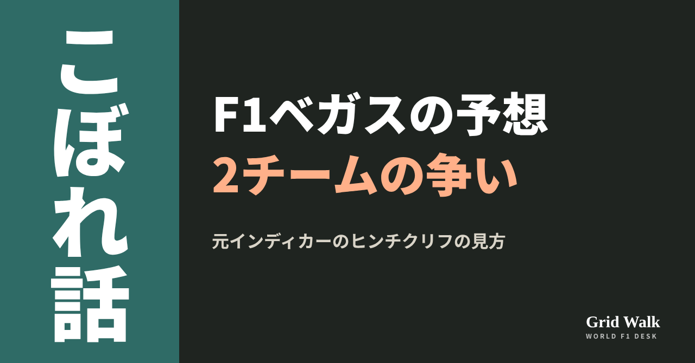<button class="cp dl" data-img="img/hinchcliffe-vegas-prediction-20261121.png" data-name="hinchcliffe-vegas-prediction-20261121_見出し画像.png">ダウンロード</button></li>
<li class="st"><div class="hd"><span class="no">2</span><b>タイトル</b></div><div class="bx" id="p7t">ヒンチクリフのベガス予想　メルセデスとレッドブル「2チームの争い」</div><button class="cp" data-plain="p7t">タイトルをコピー</button></li>
<li class="st"><div class="hd"><span class="no">3</span><b>本文</b></div><div class="bx tall" id="p7r"><p>ラスベガスGPで勝つのはどこか。元インディカー・ドライバーのジェームズ・ヒンチクリフは、メルセデスとレッドブルの争いになると予想しました。ポッドキャストのF1 Nationでの発言を、イギリスのRacingNews365が11月18日に伝えています。サイトの要約は https://f1gridwalk.github.io/news/en-racingnews365-hinchcliffe-vegas-mercedes-redbull/ にあります。</p><p>予想を伝えた元の記事と、ラスベガスの直線の区間を読み解いたコラムへのリンクはサイトで → <a href="https://f1gridwalk.github.io/lens/hinchcliffe-vegas-prediction-20261121/?utm_source=note&amp;utm_campaign=hinchcliffe-vegas-prediction-20261121">https://f1gridwalk.github.io/lens/hinchcliffe-vegas-prediction-20261121/?utm_source=note&amp;utm_campaign=hinchcliffe-vegas-prediction-20261121</a></p><p>メルセデスが本命かという問いに、ヒンチクリフはこう答えています。</p><blockquote><p>「彼らとレッドブルの争いだと思う。そうだろう？」（ヒンチクリフ、RacingNews365／イギリス）</p></blockquote><h2>全開で約1.9km、カギは最高速</h2><p>記事によると、ラスベガスの市街地コースは、ラスベガス・ブールバードの上だけで約1.9kmを全開で走ります。ほかは、止まっては加速する低速の90度コーナーが中心です。だから最高速が、ラップタイムにも追い抜きにも大きく効くといいます。F1公式によると、1周は6.201km、決勝は50周です。</p><blockquote><p>「長い直線があって、紙の上ではいちばん速いパワーユニットがある。エンジン（内燃機関）では間違いなく、レッドブルとレッドブル・パワートレインズだ」「そして、実際にいちばん速いパワーユニットがある。メルセデスだ」（ヒンチクリフ、RacingNews365／イギリス）</p></blockquote><blockquote><p>「だから、その2チームが抜けた存在になると考えるしかない」（ヒンチクリフ、RacingNews365／イギリス）</p></blockquote><p>ストリップで翼を寝かせて走る区間の話は、コラム https://f1gridwalk.github.io/lens/fia-vegas-active-aero-20261118/ にあります。</p><h2>根拠はモンツァとバクー</h2><p>ヒンチクリフは、直線の長いコースでの今季の結果も挙げました。</p><blockquote><p>「モンツァは、いわばレッドブルが盛り返す前だった。バクーは、ちょうどその始まりで、覚えているだろうけど、ジョージ（ラッセル）がマックス（フェルスタッペン）に10分の1秒単位の差で勝った」「だから、本当にその2チームの争いになると思う」（ヒンチクリフ、RacingNews365／イギリス）</p></blockquote><p>F1公式の結果では、9月6日のイタリアGP（モンツァ）はアンドレア・キミ・アントネッリ、9月26日のアゼルバイジャンGP（バクー）はジョージ・ラッセルが勝ち、どちらもメルセデスの勝利でした。バクーで2位のマックス・フェルスタッペンとの差は0.196秒です。</p><h2>マクラーレンとフェラーリには辛口</h2><p>同じメルセデスのパワーユニットを積むマクラーレンについては、改良で乗りやすくはなったものの、効率の問題は解けていないと見ています。</p><blockquote><p>「同じパワーユニットを後ろに積んでいるのに、同じようには使えていないようだ」「このコースの実際のコーナーは、マクラーレンの強みを生かすタイプではないと思う」（ヒンチクリフ、RacingNews365／イギリス）</p></blockquote><p>フェラーリについても、直線での遅れを理由に、厳しいと見ています。ただ、F1公式の結果では、前の第20戦サンパウロGPで勝ったのはマクラーレンのランド・ノリスでした。</p><p>週末の走りはどうだったか。F1公式によると、2回目のフリー走行（FP2）は、メルセデスのラッセルがトップでした。2番手はアルピーヌのピエール・ガスリー、3番手はフェラーリのシャルル・ルクレールで、レッドブル勢ではアイザック・ハジャーの4番手が最上位でした。</p><p>編集部としては、ヒンチクリフの予想の軸は、1.9kmの全開区間で最高速がどこまで効くかだと見ています。練習走行の順位は、積む燃料や走らせ方で大きく変わります。メルセデスとレッドブルの2チームに絞った見立てが当たるかどうか、答えが出るのは予選と決勝です。</p><p><strong>ラスベガスGPを制するのは、ヒンチクリフの言うとおりメルセデスかレッドブルだと思いますか？</strong></p><p>━━━━━━━━━━</p><p><strong>F1 Grid Walk では、世界のF1ニュースを毎日日本語でまとめています。</strong></p><p>海外の記事の要約を、毎日載せています。</p><p><a href="https://f1gridwalk.github.io/">https://f1gridwalk.github.io/</a></p><p>ほかの海外記事も読みたい方は、F1 Grid Walkへ。</p><p><a href="https://f1gridwalk.github.io/lens/hinchcliffe-vegas-prediction-20261121/">https://f1gridwalk.github.io/lens/hinchcliffe-vegas-prediction-20261121/</a></p><p>━━━━━━━━━━</p><p><a href="https://racingnews365.com/mercedes-and-red-bull-backed-for-sin-city-scrap-as-major-strength-offers-advantage">出典：RacingNews365（イギリス）</a></p><p><a href="https://www.formula1.com/en/results/2026/races">出典：F1公式サイト（イギリス）</a></p><p><a href="https://www.formula1.com/en/latest/article/russell-narrowly-holds-off-verstappen-to-take-victory-over-the-line-in-chaotic-azerbaijan-gp.5J4lgNh82JDL2GM302irF0">出典：F1公式サイト（イギリス）</a></p><p><a href="https://www.formula1.com/en/racing/2026/las-vegas">出典：F1公式サイト（イギリス）</a></p><p><a href="https://www.formula1.com/en/latest/article/fp2-russell-beats-gasly-and-leclerc-to-top-spot-in-wet-las-vegas-gp-practice.62NwXdkf1krQs0esgViJtc">出典：F1公式サイト（イギリス）</a></p></div><button class="cp" data-rich="p7r">本文をコピー</button></li>
<li class="st"><div class="hd"><span class="no">4</span><b>ハッシュタグ</b></div><div class="bx" id="p7h">#F1 #F1jp #ラスベガスGP #メルセデス #レッドブル #ヒンチクリフ #マクラーレン #フェラーリ #F1こぼれ話 #OFFGRID</div><button class="cp" data-plain="p7h">タグをコピー</button></li>
</ol><h3 class="xh">X</h3><ol class="steps">
<li class="st im"><div class="hd"><b>X用の画像</b><em>画像</em></div>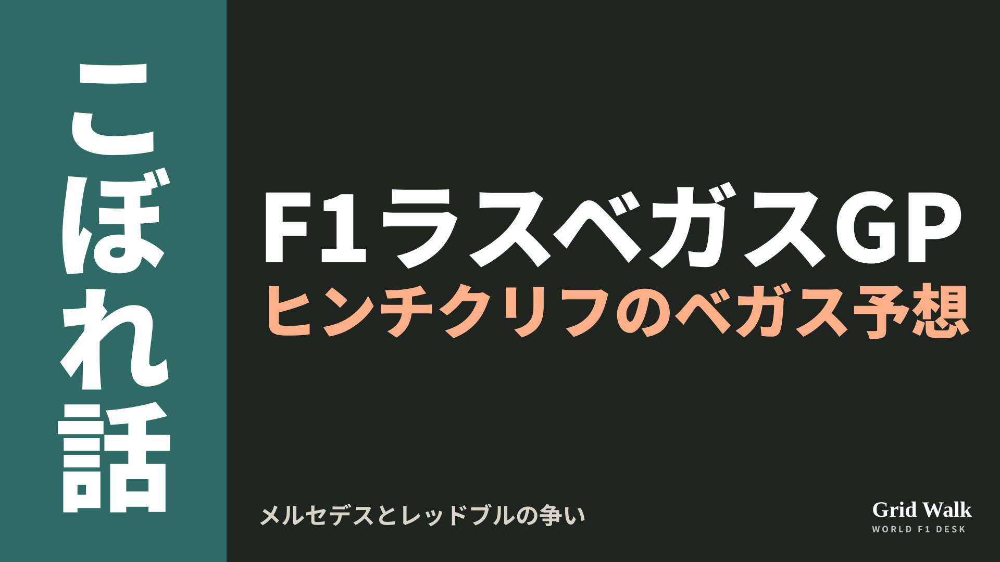<button class="cp dl" data-img="img/x_hinchcliffe-vegas-prediction-20261121.png" data-name="x_hinchcliffe-vegas-prediction-20261121.png">ダウンロード</button></li>
<li class="st"><div class="hd"><b>① noteをシェアするときの文</b></div><div class="bx" id="p7x0">元インディカー・ドライバーのヒンチクリフが、ラスベガスGPはメルセデスとレッドブルの争いになると予想しました。決め手は、全開で約1.9km続く直線での最高速です。noteにまとめました #F1jp #ラスベガスGP</div><button class="cp" data-plain="p7x0">コピー</button></li>
<li class="st"><div class="hd"><b>② ①への返信</b></div><div class="bx" id="p7x1">ほかの海外記事も読みたい方は、F1 Grid Walkへ。
https://f1gridwalk.github.io/lens/hinchcliffe-vegas-prediction-20261121/?utm_source=x&amp;utm_campaign=hinchcliffe-vegas-prediction-20261121</div><button class="cp" data-plain="p7x1">コピー</button></li>
<li class="st"><div class="hd"><b>③ ②への返信</b></div><div class="bx" id="p7x2">毎日の海外F1ニュースは、日本語でこちらにまとめています。
https://f1gridwalk.github.io/</div><button class="cp" data-plain="p7x2">コピー</button></li>
</ol></section><section class="part" id="p8"><h2><span class="tag">OFF GRID</span>フェルスタッペン、工場のシミュレーターへ　ベガスは「まったく違う」</h2><p class="sub">サイトに公開：20:33</p><ol class="steps">
<li class="st im"><div class="hd"><span class="no">1</span><b>見出し画像</b><em>画像</em></div>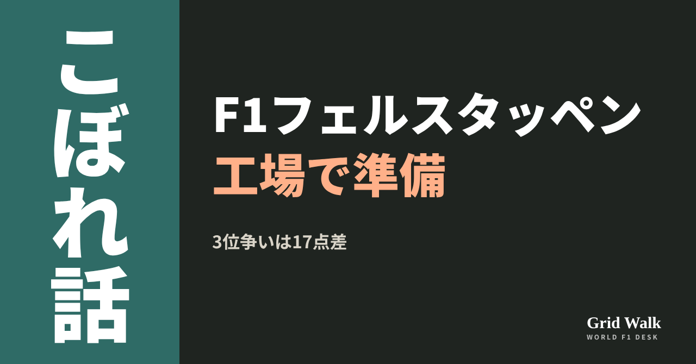<button class="cp dl" data-img="img/verstappen-factory-sim-vegas-20261121.png" data-name="verstappen-factory-sim-vegas-20261121_見出し画像.png">ダウンロード</button></li>
<li class="st"><div class="hd"><span class="no">2</span><b>タイトル</b></div><div class="bx" id="p8t">フェルスタッペン、工場のシミュレーターへ　ベガスは「まったく違う」</div><button class="cp" data-plain="p8t">タイトルをコピー</button></li>
<li class="st"><div class="hd"><span class="no">3</span><b>本文</b></div><div class="bx tall" id="p8r"><p>サンパウロGPで21番手から2位に入ったあと、レッドブルのマックス・フェルスタッペンが向かったのは、イギリスのミルトン・キーンズにあるチームの工場でした。オランダのGPblogが11月17日に伝えています。ラスベガスGPに向けて、シミュレーターで準備をしたといいます。</p><p>元の記事へのリンクと、ラスベガスの寒さとタイヤを扱ったコラムへの案内はサイトで → <a href="https://f1gridwalk.github.io/lens/verstappen-factory-sim-vegas-20261121/?utm_source=note&amp;utm_campaign=verstappen-factory-sim-vegas-20261121">https://f1gridwalk.github.io/lens/verstappen-factory-sim-vegas-20261121/?utm_source=note&amp;utm_campaign=verstappen-factory-sim-vegas-20261121</a></p><blockquote><p>「ブラジルはめちゃくちゃなレースだった。後ろからスタートして2位で終われたのは、すごくいい結果だ」「工場に戻って、チームと一緒にシミュレーターで作業してきた。今年最後の3連戦の前にね」（フェルスタッペン、GPblog／オランダ）</p></blockquote><p>F1公式の結果では、サンパウロGPはフェルスタッペンが2位、チームメイトのアイザック・ハジャーが3位で、レッドブルは2台で33点を取りました。サイトの要約は https://f1gridwalk.github.io/news/nl-gpblog-verstappen-factory-vegas/ にあります。</p><h2>長い直線と、寒さ</h2><p>第21戦ラスベガスGPは、現地11月19〜21日です。フェルスタッペンはこのコースで、2023年と2025年に勝っています（F1公式）。GPblogによると、2回とも2番グリッドからの勝利でした。</p><blockquote><p>「ラスベガスはまったく違うサーキットだ。速くて、あの長い直線がある」「だから、電気のエネルギーをどこで、いつ使うかが大事になる」（フェルスタッペン、GPblog／オランダ）</p></blockquote><p>GPblogは、新しい世代の車では、長い直線でのエネルギーの管理が大きな意味を持つとフェルスタッペンが見ている、と書いています。</p><blockquote><p>「それに、あそこは寒い。タイヤは車ごとに違う動きをするから、そこをうまく扱わないといけない」（フェルスタッペン、GPblog／オランダ）</p></blockquote><p>サンパウロGPのあとに話していた、直線でのスリップストリームと、寒さとタイヤの話は、先週のコラム https://f1gridwalk.github.io/lens/verstappen-las-vegas-tyres-20261114/ で取り上げました。</p><h2>自分の2位より、チームの3位</h2><p>F1公式によると、ドライバーズランキングでフェルスタッペンは279点の2位で、3位のジョージ・ラッセルとは17点差です。コンストラクターズでは、レッドブルが415点で3位、4位のマクラーレン（398点）とはこちらも17点差。残りはラスベガス、カタール、アブダビの3戦です。</p><p>レッドブルは開幕から15戦勝てませんでしたが、10月4日の第16戦バーレーンGPからの直近5戦で、フェルスタッペンが3勝しています（F1公式の結果）。</p><blockquote><p>「この何戦かで、本当にいい前進ができた。シーズンをいい形で終えて、コンストラクターズ選手権のためにできるだけ多くの点を持ち帰れたらいい」（フェルスタッペン、GPblog／オランダ）</p></blockquote><p>GPblogは、フェルスタッペンが自分の順位より、チームの成績を優先していると伝えています。</p><p>編集部としては、ブラジルとラスベガスの間の週に工場へ戻ったこと自体が、3位争いの重さを表していると見ています。マクラーレンとの差は17点で、ラスベガスはフェルスタッペンが2度勝ってきたコースです。3連戦の最初の週末で、この差がどう動くかが見どころになりそうです。</p><p><strong>ラスベガスで、レッドブルはマクラーレンとの17点の差を広げられると思いますか？</strong></p><p>━━━━━━━━━━</p><p><strong>F1 Grid Walk では、世界のF1ニュースを毎日日本語でまとめています。</strong></p><p>海外の記事の要約を、毎日載せています。</p><p><a href="https://f1gridwalk.github.io/">https://f1gridwalk.github.io/</a></p><p>ほかの海外記事も読みたい方は、F1 Grid Walkへ。</p><p><a href="https://f1gridwalk.github.io/lens/verstappen-factory-sim-vegas-20261121/">https://f1gridwalk.github.io/lens/verstappen-factory-sim-vegas-20261121/</a></p><p>━━━━━━━━━━</p><p><a href="https://www.gpblog.com/nl/nieuws/verstappen-terug-naar-red-bull-fabriek-voor-gp-van-las-vegas">出典：GPblog（オランダ）</a></p><p><a href="https://www.gpblog.com/en/news/verstappen-returns-to-red-bull-factory-ahead-of-the-las-vegas-grand-prix">出典：GPblog（オランダ）</a></p><p><a href="https://www.formula1.com/en/results/2026/races/1299/brazil/race-result">出典：F1公式サイト（イギリス）</a></p><p><a href="https://www.formula1.com/en/results/2026/races">出典：F1公式サイト（イギリス）</a></p><p><a href="https://www.formula1.com/en/results/2026/drivers">出典：F1公式サイト（イギリス）</a></p><p><a href="https://www.formula1.com/en/results/2026/team">出典：F1公式サイト（イギリス）</a></p><p><a href="https://www.formula1.com/en/results/2023/races/1225/las-vegas/race-result">出典：F1公式サイト（イギリス）</a></p><p><a href="https://www.formula1.com/en/results/2025/races">出典：F1公式サイト（イギリス）</a></p><p><a href="https://www.formula1.com/en/racing/2026">出典：F1公式サイト（イギリス）</a></p></div><button class="cp" data-rich="p8r">本文をコピー</button></li>
<li class="st"><div class="hd"><span class="no">4</span><b>ハッシュタグ</b></div><div class="bx" id="p8h">#F1 #F1jp #フェルスタッペン #レッドブル #ラスベガスGP #シミュレーター #F1こぼれ話 #OFFGRID</div><button class="cp" data-plain="p8h">タグをコピー</button></li>
</ol><h3 class="xh">X</h3><ol class="steps">
<li class="st im"><div class="hd"><b>X用の画像</b><em>画像</em></div>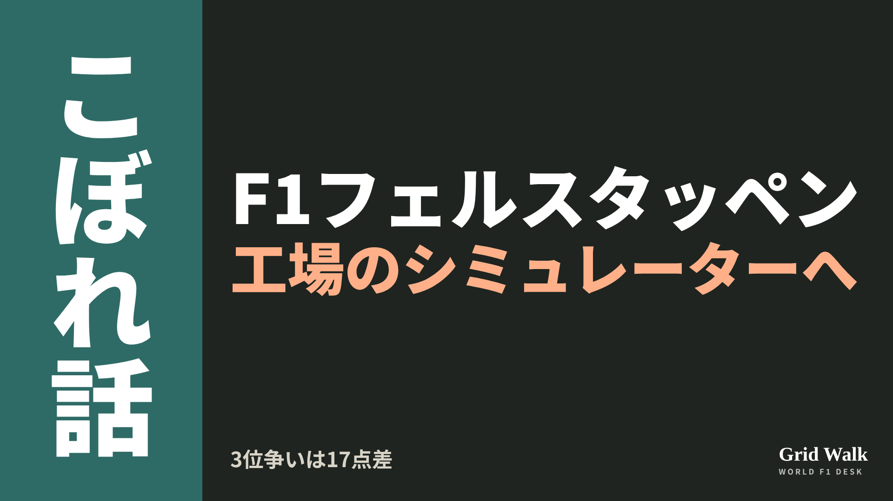<button class="cp dl" data-img="img/x_verstappen-factory-sim-vegas-20261121.png" data-name="x_verstappen-factory-sim-vegas-20261121.png">ダウンロード</button></li>
<li class="st"><div class="hd"><b>① noteをシェアするときの文</b></div><div class="bx" id="p8x0">フェルスタッペンがイギリスの工場に戻り、シミュレーターでラスベガスGPの準備をしたと、オランダのGPblogが伝えました。本人は「ラスベガスはまったく違うサーキットだ」。noteにまとめました #F1jp #フェルスタッペン #レッドブル</div><button class="cp" data-plain="p8x0">コピー</button></li>
<li class="st"><div class="hd"><b>② ①への返信</b></div><div class="bx" id="p8x1">ほかの海外記事も読みたい方は、F1 Grid Walkへ。
https://f1gridwalk.github.io/lens/verstappen-factory-sim-vegas-20261121/?utm_source=x&amp;utm_campaign=verstappen-factory-sim-vegas-20261121</div><button class="cp" data-plain="p8x1">コピー</button></li>
<li class="st"><div class="hd"><b>③ ②への返信</b></div><div class="bx" id="p8x2">毎日の海外F1ニュースは、日本語でこちらにまとめています。
https://f1gridwalk.github.io/</div><button class="cp" data-plain="p8x2">コピー</button></li>
</ol></section></main><script>
function done(b,msg){const t=b.dataset.t||b.textContent;b.dataset.t=t;b.classList.add('ok');b.textContent=msg||'コピーしました';setTimeout(()=>{b.classList.remove('ok');b.textContent=t},2000)}
function selectEl(el){const r=document.createRange();r.selectNodeContents(el);const s=getSelection();s.removeAllRanges();s.addRange(r)}
async function rich(el,b){
  try{await navigator.clipboard.write([new ClipboardItem({'text/html':new Blob([el.innerHTML],{type:'text/html'}),'text/plain':new Blob([el.innerText],{type:'text/plain'})})]);done(b);return}catch(e){}
  selectEl(el);let ok=false;try{ok=document.execCommand('copy')}catch(e){}
  if(ok){getSelection().removeAllRanges();done(b)}else{done(b,'選択しました。コピーしてください')}}
async function plain(el,b){
  try{await navigator.clipboard.writeText(el.innerText);done(b);return}catch(e){}
  selectEl(el);let ok=false;try{ok=document.execCommand('copy')}catch(e){}
  if(ok){getSelection().removeAllRanges();done(b)}else{done(b,'選択しました。コピーしてください')}}
let dlns=null;(async()=>{try{dlns=await window.claude?.use?.("downloads")}catch(e){dlns=null}})();
async function img(src,b){
  b.dataset.t=b.dataset.t||b.textContent;
  if(!dlns){try{dlns=await window.claude?.use?.("downloads")}catch(e){}}
  if(!dlns){b.textContent='ダウンロードできませんでした';setTimeout(()=>{b.textContent=b.dataset.t},3500);return}
  try{const blob=await fetch(src).then(r=>r.blob());b.textContent='保存の確認を開いています…';
    await dlns.save({filename:b.dataset.name,data:blob});done(b,'ダウンロードしました')}
  catch(e){const c=e&&e.code;b.textContent=c==='declined'?'キャンセルしました':c==='rate_limited'?'少し待ってからもう一度押してください':'ダウンロードできませんでした';setTimeout(()=>{b.textContent=b.dataset.t},3500)}}
document.querySelectorAll('.cp').forEach(b=>b.addEventListener('click',()=>{
  if(b.dataset.rich)rich(document.getElementById(b.dataset.rich),b);
  else if(b.dataset.plain)plain(document.getElementById(b.dataset.plain),b);
  else img(b.dataset.img,b)}));
</script>